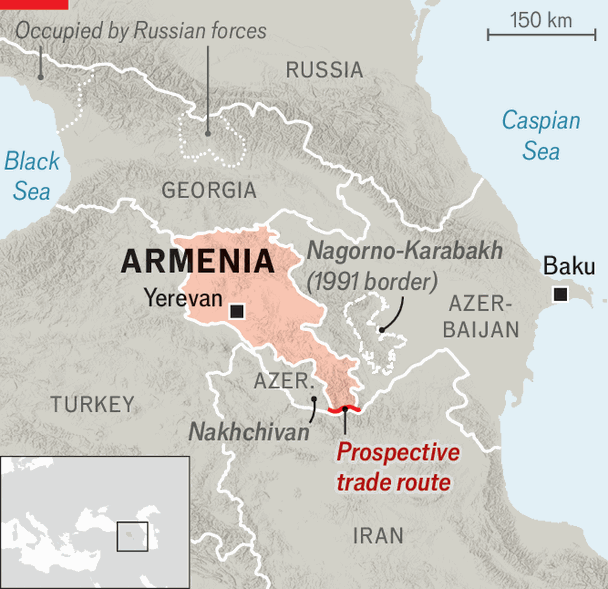

Armenia’s election is a setback for Vladimir Putin
Russia’s dirty tricks are failing to stop its pivot to the West
June 11th 2026

MINERAL WATER and roses. Cognac and strawberries. Cherries and wine. Even the fish. By the time Armenia held its general election on June 7th, Russia had banned imports of swathes of the country’s goods. The Kremlin made dark threats about the Western-leaning prime minister, Nikol Pashinyan, and spread disinformation on social media. Dmitry Medvedev, Russia’s former president, compared Mr Pashinyan’s pivot to the European Union to the “dangerous path” of Leon Trotsky (who broke with Stalin and was murdered by a Soviet assassin for it). The message to Armenia, once one of Russia’s closest allies, was clear: Think twice before you re-elect him.
In the end, however, the Kremlin’s pressure campaign backfired. Mr Pashinyan’s party, Civil Contract, won nearly 50% of the vote, giving it a majority in the National Assembly. A former journalist turned protest leader, Mr Pashinyan entered office eight years ago, following a peaceful uprising against Armenia’s old, Kremlin-backed elite. He has sought closer ties with America, the EU and Turkey, a historical foe. Since losing a long-running war with Azerbaijan in 2023, he has also been working on a peace deal. “The Armenian people voted for regional prosperity and co-operation,” said Mr Pashinyan.
Western leaders welcomed the result. Ursula von der Leyen, the president of the European Commission, said that Mr Pashinyan’s victory showed that “the spirit of the Velvet Revolution you led in 2018 is alive and well.” The union helped Armenia resist Russia’s economic blackmail, finding buyers for Armenian goods that Russia had banned. On June 4th the EU announced a small but symbolically important financial-aid package, worth €50m ($58m). It promised more to come.

Shortly after polls closed Samvel Karapetyan, whose pro-Russian Strong Armenia party won 23% of the vote, cried foul. Speaking from his hilltop mansion, where he is under house arrest for calling for the government to be overthrown (a charge he denies), the Russian-Armenian oligarch accused the authorities of meddling in the election. Dmitry Peskov, the Kremlin’s spokesman, also hinted (apparently without irony) at “violations” during the vote. Such claims have little weight. The Organisation for Security and Co-operation in Europe, an intergovernmental organisation, said the election was “transparent and efficient”.
The truth is that the opposition lost because of its message. While Mr Pashinyan promised peace and economic development, Mr Karapetyan offered reheated nationalism and a return to the partnership with Russia that most Armenians think failed them. A half-baked proposal for a “Ministry of Sex” to tackle falling fertility and ensure “there will be no unsatisfied woman”, suggested by Mr Karapetyan’s son on a podcast, showed the shallowness of Strong Armenia’s domestic platform. For his part Robert Kocharyan, a former president who led the second-biggest opposition party, conjured up bad memories of the violence and oligarchy that defined Armenia’s authoritarian past.
Mr Pashinyan’s victory will reassure Armenia’s neighbours, Turkey and Azerbaijan, that its foreign-policy pivot is not about to unravel. Normalising relations with Turkey, which shut its border with Armenia in 1993 in solidarity with its ally, Azerbaijan, is one possible prize. Armenia and Turkey have already agreed to rebuild a historic bridge on the border and are working on restoring an old railway route between the two countries. The completion of the Trump Route for International Peace and Prosperity, an American-backed trade route, now looks more likely. It would link Azerbaijan to its exclave in Nakhchivan via southern Armenia.
Despite Mr Pashinyan’s victory, the mood among some of his supporters is bittersweet. Civil Contract fell short of the two-thirds majority that would allow it to hold a referendum on amending the constitution. The party wants to do so to reform the judiciary. But it also matters for the peace process. Azerbaijan wants Armenia to remove a reference in its constitution to Nagorno-Karabakh, the territory they once fought over, before signing a peace treaty.
“The question now is whether Azerbaijan will be ready to move ahead with signing and ratification without further movement on Armenia’s constitution, or whether it will continue to insist on this issue,” says Zaur Shiriyev of the Carnegie Endowment for International Peace, a think-tank. Turkey has insisted that Armenia and Azerbaijan must sign a peace treaty before it will open its border.
Russia could also cause trouble. Mr Karapetyan did better than opinion polls had suggested. That “might lead some to believe that the various measures adopted by Russia during the campaign had some effect”, says Laurence Broers of Chatham House, a think-tank in London, and could deter some Armenians from supporting Civil Contract in the future. One risk is that Vladimir Putin, Russia’s president, tears up a duty-free gas-export deal to punish Mr Pashinyan. “I think this is the beginning of a newly intensified crisis between Russia and Armenia,” says Arsen Kharatyan, founder of AliQ Mediaplatform, an Armenian-Georgian news outlet.
Yet overall, Civil Contract’s win vindicates Armenia’s efforts to pursue its own course. Russia’s efforts to pull the country back into its orbit were tested, and failed. In April Hungary’s voters kicked out Viktor Orban, the Kremlin’s best friend within the EU. Now its allies have again been defeated at the ballot box. In his victory speech, Mr Pashinyan vowed to make good on the promises of the Velvet Revolution, insisting that “the criminal-oligarchic system be completely eradicated”. Mr Putin will be wishing him ill. But plenty of others will be cheering him on. ■
To stay on top of the biggest European stories, sign up to Café Europa, our weekly subscriber-only newsletter.